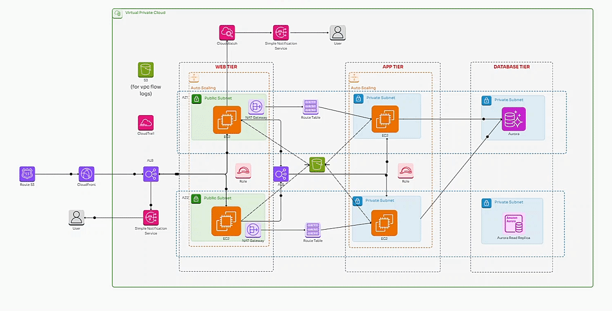
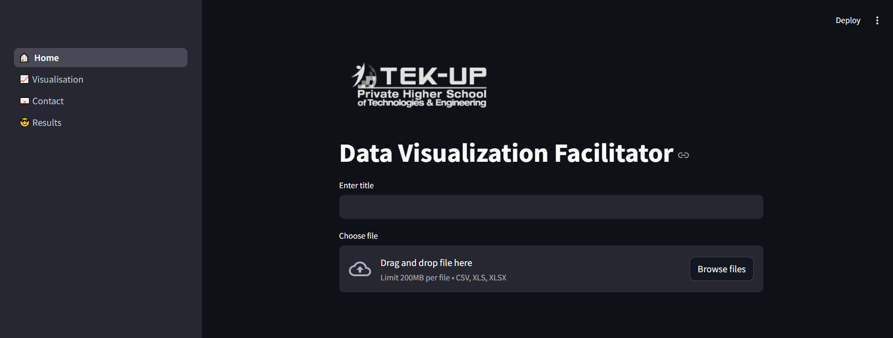
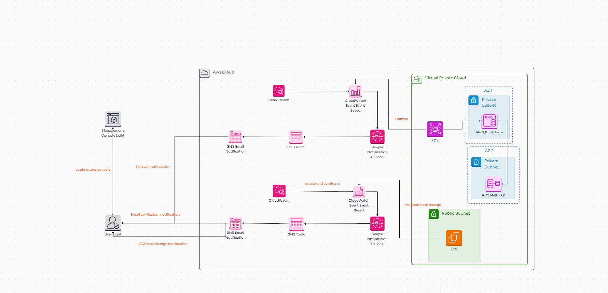

three-tier AWS VPC architecture with a public-facing web tier (EC2, ALB), a private app tier, and a database tier (Amazon Aurora). It ensures scalability, security, and high availability with auto-scaling, private subnets, and monitoring using CloudWatch and SNS.

Streamlit app designed to facilitate data visualization and analysis. Users can upload CSV or Excel files (up to 200MB) and provide a title for the analysis. The app features navigation for home, visualization, contact, and results, making it easy for users to interact with the data and generate visual insights. The simple and intuitive design allows quick exploration of datasets.

smart city data pipeline that collects real-time vehicle, GPS, camera, weather, and emergency data. The data is streamed through Kafka, processed by Apache Spark, and stored in AWS S3 using AWS Glue. It is then analyzed in Amazon Redshift and visualized in tools like Power BI and Tableau. The architecture is secured with AWS IAM and containerized using Docker for scalability.

Implementing High Availability in AWS: RDS Multi-AZ with CloudWatch and SNS for Automated Failover and EC2 Monitoring

Automating Model Deployment with AWS SageMaker, Lambda, and SNS Notifications

FOOD CHATBOT.